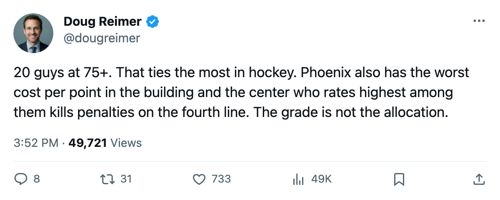

20 Players Above 75, 13 Points in 22: The Phoenix Roster Is Deep Enough to Tie the League and Shallow Enough to Finish Last
The Coyotes have the most 75-and-above skaters in hockey on paper and the worst dollar-per-point in the building. The center who rates highest among them sits third.
 Doug ReimerAnalytics editor, ex-video coach · The Slot Report
Doug ReimerAnalytics editor, ex-video coach · The Slot Report
 Phoenix Coyotes carries 20 players graded 75 or higher by the Bureau's Book. Four other clubs match that total. No club carries more. The Coyotes have 13 points in 22 games, last in the Western Conference by 9 points, and a cost per point of $4.26M, the highest figure in hockey.
Phoenix Coyotes carries 20 players graded 75 or higher by the Bureau's Book. Four other clubs match that total. No club carries more. The Coyotes have 13 points in 22 games, last in the Western Conference by 9 points, and a cost per point of $4.26M, the highest figure in hockey.
The roster has no separation. The highest-graded skater is Mike Sillinger at 87, who has played 13 games and produced 4 points. The next three are Ladislav Nagy at 83, Shane Doan at 83, and Steve Konowalchuk at 82. Below that, the roster is a plateau of 78s and 76s. David Tanabe, Paul Mara,  Mike Ricci75, and Brian Savage all sit in the 78-79 band. Drake Berehowsky, Patrice Brisebois, Ossi Vaananen, Jeff Taffe, Landon Wilson, and Kyle Wanvig all sit at 75-77.
Mike Ricci75, and Brian Savage all sit in the 78-79 band. Drake Berehowsky, Patrice Brisebois, Ossi Vaananen, Jeff Taffe, Landon Wilson, and Kyle Wanvig all sit at 75-77.
That is the problem the dollar figure shows. A club with 20 men at 75 or above should not be paying $4.26M a point. The payroll is $55.41M, 15th in the league. The revenue is $34.91M. The profit is $12.47M, but that comes from the cost side: the Coyotes draw 11,380 a night, the lowest figure in the league, at $82 a ticket. Buffalo sits second-worst at $3.59M a point. The gap between those two is the gap between a team that is broken and a team that is merely expensive.
The Center on the Wrong Line
The Bureau's mis-slot audit has one Phoenix entry, and it is the one that explains the roster's logic. Mike Ricci, a center graded 78, plays L3C_ and K2C_. Behind him in the lineup sit  Jan Hrdina73 at 75 on L1C_ and P1C_, and
Jan Hrdina73 at 75 on L1C_ and P1C_, and  Robert Reichel73 at 75 on L2C_ and P2C_. The man rated highest at the position plays third center and kills penalties. The two men rated three points lower play the first two power-play units.
Robert Reichel73 at 75 on L2C_ and P2C_. The man rated highest at the position plays third center and kills penalties. The two men rated three points lower play the first two power-play units.
Ricci has 2 points in 22 games on $2.60M. Hrdina has 10 points in 22 on $1.19M. Reichel has 1 point in 15 on $3.40M. The coach has looked at 78 and 75 and put 78 on the penalty kill.
The Contract Cliff
The expiring contracts tell you what the front office inherits. The highest-paid man on the roster,  Sean Burke86, is 38 years old, carries a Book grade of 88, has played 15 of the Coyotes' 22 games, and has zero years left on his deal. His salary is $4.20M. Brian Boucher79 at 81 and $2.20M has played 7. That is not a rotation by choice. Tobias Hellkvist, graded 67, carries the third goalie spot on $0.58M.
Sean Burke86, is 38 years old, carries a Book grade of 88, has played 15 of the Coyotes' 22 games, and has zero years left on his deal. His salary is $4.20M. Brian Boucher79 at 81 and $2.20M has played 7. That is not a rotation by choice. Tobias Hellkvist, graded 67, carries the third goalie spot on $0.58M.
Beyond the two goaltenders, Doan ($2.40M, 0 years, 14 points in 20), Sillinger ($1.80M, 0 years, 4 points in 13), and Drake Berehowsky ($1.50M, 0 years, 7 points in 22) are all unsigned for next year. On the one-year side, Patrice Brisebois ($4.10M), Brian Savage ($3.50M), Robert Reichel ($3.40M), Ricci ($2.60M), Konowalchuk ($1.50M), and Hrdina ($1.19M) each have one year remaining.
What stays locked past both dates is small: Nagy at $5.28M on 5 years, Tanabe at $2.60M on 2, Jeff Taffe at $1.48M on 3, and Landon Wilson at $1.33M on 3.
| Player | Pos | Overall | Salary | Yrs Left | GP | Pts |
|---|---|---|---|---|---|---|
| Nagy | LW | 83 | $5.28M | 5 | 22 | 17 |
| Sean Burke | G | 88 | $4.20M | 0 | 15 | |
| Brisebois | D | 76 | $4.10M | 1 | 22 | 2 |
| Savage | LW | 78 | $3.50M | 1 | 17 | 1 |
| Robert Reichel | C | 75 | $3.40M | 1 | 15 | 1 |
| Tanabe | D | 79 | $2.60M | 2 | 22 | 9 |
| Mike Ricci | C | 78 | $2.60M | 1 | 22 | 2 |
| Doan | RW | 83 | $2.40M | 0 | 20 | 14 |
| Brian Boucher | G | 81 | $2.20M | 0 | 7 | |
| Sillinger | C | 87 | $1.80M | 0 | 13 | 4 |
| Berehowsky | D | 76 | $1.50M | 0 | 22 | 7 |
| Konowalchuk | LW | 82 | $1.50M | 1 | 22 | 9 |
| Taffe | C | 76 | $1.48M | 3 | 17 | 4 |
| Wilson | RW | 76 | $1.33M | 3 | 22 | 13 |
| Ference | D | 75 | $1.20M | 0 | 22 | 0 |
| Mara | D | 79 | $1.20M | 0 | 22 | 9 |
| Jan Hrdina | C | 75 | $1.19M | 1 | 22 | 10 |
| Kolanos | C | 71 | $1.10M | 0 | 21 | 3 |
| Nash | LW | 73 | $1.00M | 0 | 22 | 0 |
| Mckay | RW | 70 | $0.91M | 0 | 5 | 0 |
| Nazarov | LW | 68 | $0.70M | 0 | 2 | 1 |
| Vaananen | D | 77 | $0.70M | 0 | 22 | 6 |
| Wanvig | RW | 75 | $0.60M | 0 | 22 | 2 |
What the Injury Ledger Adds
The Coyotes have logged 13 injury spells and 98 days lost. That is mid-pack, but the names matter: Sillinger has a back spell designated by the league. Doan has been in and out twice. Sean Burke and Brian Boucher have each missed time, which explains why neither holds the net consistently. The Development Index lists one Phoenix player and he is a faller: Billy Tibbetts62, down 4 points to an overall of 66 on a base of 72, with 2 points in 23 games.
The Room
Club morale sits at 89.0, 4th-lowest in the league. Mike Ricci is at 79 on the Morale Scale. Krystofer Kolanos is at 79. The players who are buried know they are buried. The only riser or faller Phoenix has is a man going the wrong way.
The arithmetic is straightforward. A roster with 20 men at 75 or above, a payroll of $55.41M, and 13 points in 22 games is a roster where the grade does not match the allocation. The Bureau's Book says Ricci is better than the two men playing top-six center. The coach says otherwise. The record says 5 wins, 1 overtime win, 15 regulation losses, 1 overtime loss. The $4.26M a point says the whole construction is wrong, and most of it walks in June anyway.
